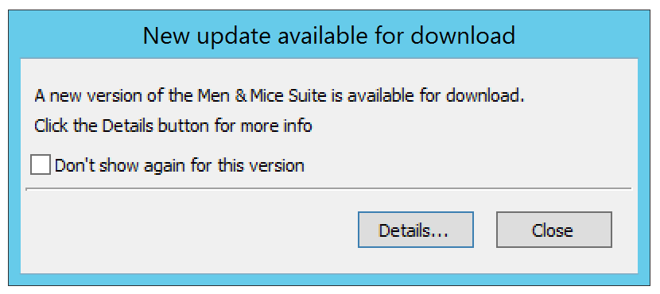
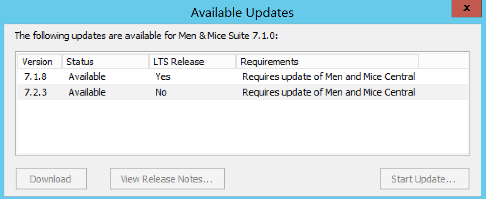
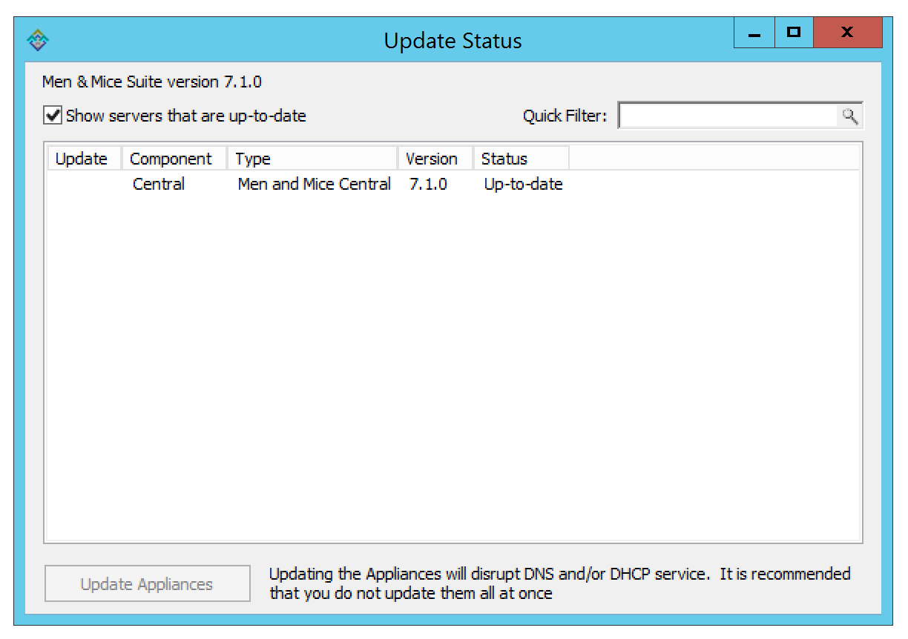

Update Guide
The Update Manager notifies you when a new version of Micetro is available and simplifies the update process for Micetro. Using the Update Manager you can update Men&Mice Central, the Men&Mice Server Controllers and the Men&Mice Appliances with minimal downtime.
Update paths
If you’re updating Micetro from an older version, refer to the following table:
Origin version |
Target version |
Update to |
|---|---|---|
9.x |
10.x |
10.x [1] |
8.x |
10.x |
10.x [1] |
7.x |
10.x |
10.x [1] |
6.x |
10.x |
9.3 |
Checking and Downloading an Update
When you log into the system using the Management Console, an update notification is displayed when a new version of Micetro is available.
{kind=link}
You can also check if an update is available by selecting .
Note
To receive update notifications and check for updates, you must be in a group with administration privileges. Only the Administrator user can perform the actual update.
If you are not interested in receiving notifications for the update, select the Don’t show again for this version checkbox. When the checkbox is checked, a notification for the specific update is no longer displayed, however, if a later update becomes available, the dialog box is displayed again.
Click the Details button to get more information on the update. This displays a dialog box that shows all available updates.
{kind=link}
To view the release notes for an update, select the corresponding update and then click the View Release Notes button. This will show the release notes in a web browser.
To download the new version, select the version and click the Download button. The new version is downloaded and stored on the Men&Mice Central server. Once the download has completed, you can start the update.
Note
To download and perform the actual update you must be logged in as Administrator. If you are not logged in as Administrator, the Download button is disabled.
Installing an Update
Once the update has been downloaded, you can start the actual update process. The Update Manager can update Men&Mice Central, connected Server Controllers and Men&Mice Virtual Appliances. The Men&Mice Web Application must be updated manually.
If you want to perform the update at a later time, you can close the dialog box. To display the dialog box again, select .
The following instructions contain information on how to update Micetro after the update has been downloaded using the Update Manager.
To start the update process, click the Start Update button in the update details dialog box. When you click Start Update the following happens:
Men&Mice Central and the DNS and DHCP server controllers are updated. (See Updating Central in High Availability setup for updating Central in HA configuration.)
If the update contains a new version of the Men&Mice Web Application, a dialog box is displayed where you can find instructions on manually updating the Men&Mice Web Application.
If your environment contains a Men&Mice Appliance, the latest version of the Men&Mice Appliance software is uploaded to the Appliance, but isn’t applied automatically.
Updating an Appliance
As an update to the Men&Mice Appliance sometimes requires that the Appliance is restarted, the update is not applied automatically.
To complete an Appliance update, you must manually initiate the update. To minimize service disruption you might want to update your Appliances in several batches.
From the menu bar, select . The Update Status dialog box displays. The dialog box shows the update status for all DNS and DHCP server controllers as well as all Men&Mice Appliances. If an update is pending for an Appliance, the status is listed as Update pending and a checkbox is displayed in the Update column.
{kind=link}
Click the checkbox to select the Appliance(s) you want to update.
Click the Update Appliances button. This will update the selected appliance(s).
Viewing Update Status
Through the Update Status dialog box, you can always view the update status for Micetro components. To display the Update Status dialog box, select .
{kind=link}
The dialog box shows the update status for all DNS and DHCP server controllers as well as all Men&Mice Appliances. If an update is pending for an Appliance, the status is listed as Update pending and a checkbox is displayed in the Update column.
Uncheck the Show servers that are up-to-date checkbox to only show servers that need to be updated.
Note
The Auto Updater will update all connected server controllers along with Central.
Note
If some Controllers can’t be updated automatically please check if the M&M Updater daemon or Windows service is running on the server and if the port 4603/tcp is accessible from the machine that runs Central. See Networking requirements for more information.
Warning
When Central is in a high availability configuration, the Auto Updater cannot be used. See Updating Central in High Availability setup for instructions.
Verifying the updates
In order to verify that the update has propagated to all servers:
Log in to the Management Console
Navigate to
Review the version reported for each of the listed components. The listed version number for Micetro is listed near the top, and should match the version of each component in the list.
Log in to the Web Application, click on the User icon in the top menu. Verify that the version listed there matches the version of the Men&Mice Central that was installed.
Note
If there’s a version mismatch between components, the Management Console and Web Application will report an error when trying to log in.